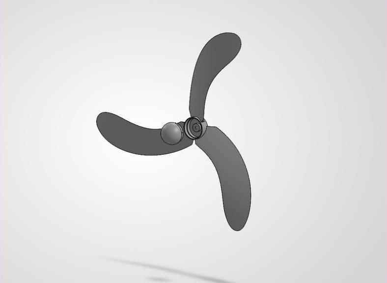

Case study 03 — Biomimicry prototype
Maple seeds spin as they fall, turning moving air into rotation. This three-blade propeller borrows that curved, winged shape for a small wind turbine — then goes outside to prove it works.

A maple seed (samara) is a natural rotor: its single curved wing makes it spin as it drops. The project set out to translate that shape into a propeller for a small wind turbine.
Each of the three blades takes the seed’s profile — a broad, curved wing tapering toward the hub — and is arranged evenly around a central hub so the rotor stays balanced as it spins.
The printed propeller was mounted on the turbine and tested outdoors by the sea. A live voltage display on the rig shows the turbine generating power as the blades turn in the wind.
The project moved from an idea in nature to a physical rotor that spins and produces a measurable output — a base for refining blade angle, size and material in the next round.
CAD, 3D printing and working prototypes — designed, made and tested.